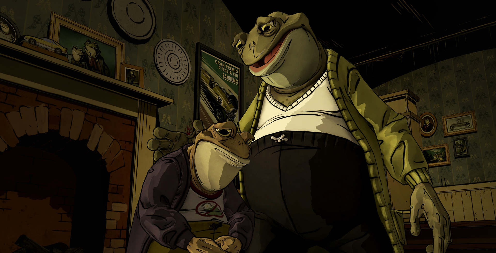
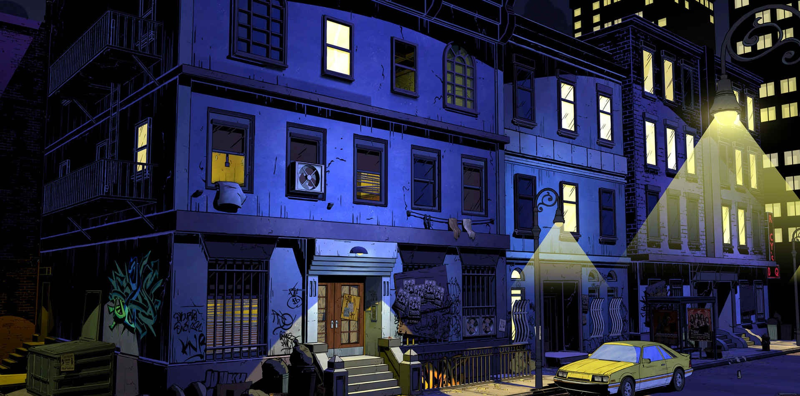
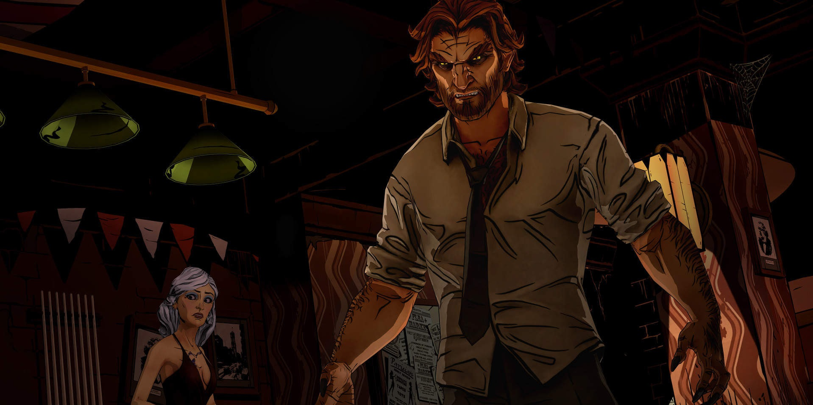
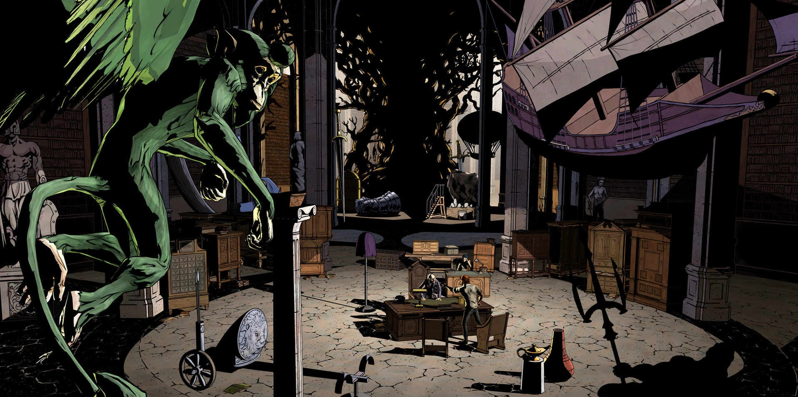

The Wolf Among Us
The Wolf Among Us is an episodic graphic adventure video game based on Bill Willingham's Fables comic book series. It is developed and published by Telltale Games and distributed by Vertigo and Warner Bros. Interactive Entertainment. It is canon with the comic book universe and is set as a prequel to the comic book. The game's first season consists of five episodes, with the first episode being released for Microsoft Windows and Xbox 360 worldwide on October 11, 2013, for OS X worldwide on October 14, 2013, for PlayStation 3 on October 15, 2013, in North America and on October 16, 2013, in Europe and Australia, for iOS worldwide on December 4, 2013, and PlayStation Vita before the end of 2014. Retail versions for the PlayStation 3, PlayStation 4, Playstation Vita, Xbox 360, and Xbox One consoles will be available in November 2014.
The Wolf Among Us is a point-and-click adventure game, where the player, in control of the protagonist Bigby Wolf, can move about the environment and examine and interact with other characters or objects. It is similar to Telltale's previous game, The Walking Dead, in that the player may make choices in their actions or through conversation trees that will influence future events in the story, including events in future episodes. These include major decisions, such as deciding which of two culprits to chase after while allowing the other to go free. Like The Walking Dead, these choices are recorded by Telltale, and general statistics on the major choices are presented to the player after completing each episode to allow them to compare their take on the story to others. Telltale has worked to make some of these choices affect parallel events within the narrative, such as choosing which of two people to help first, and later learning from the second one that their help could have been used before.
Some scenes are more action-oriented, requiring the player to respond to a series of quick time events. Failure to do these correctly may end the scene with the death of Bigby or another character, but the game will restart at a checkpoint just before that scene to allow the player to try again. In some instances, failure to active particular quick time events results in minor game decisions.
The Wolf Among Us is set in the year 1986, decades before the events of the first issue of Fables. For years, many of the magical and mystical lands described in myth, legend, and folklore (known colloquially as "the homelands") have been occupied by an enigmatic tyrant known only as the Adversary. To escape the Adversary's marauding armies and totalitarian regime many creatures and characters known as "fables" fled to the mundane world and created an enclave known as Fabletown in colonial America, now located in modern-day Manhattan. To mask their presence from the native humans (referred to as "mundies") all non-human fables have to purchase an enchantment known as a "glamour" which allows them to appear human, or be relocated to a rural community known as "The Farm". The reformed Big Bad Wolf, Bigby Wolf (voiced by Adam Harrington), is the sheriff of Fabletown and is responsible for hiding the community from the wider world and enforcing its laws.
At the 2014 New York Comic Con, Vertigo Comics announced that they will be adapting The Wolf Among Us into comic form, to be released digitally first in December 2014 and later as print comic. The story will be adapted for the comic by Matthew Sturges, who has previously written for the Fables series, and Dave Justus, staying otherwise true to the game's story but exploring some of the characters and back story in more depth.